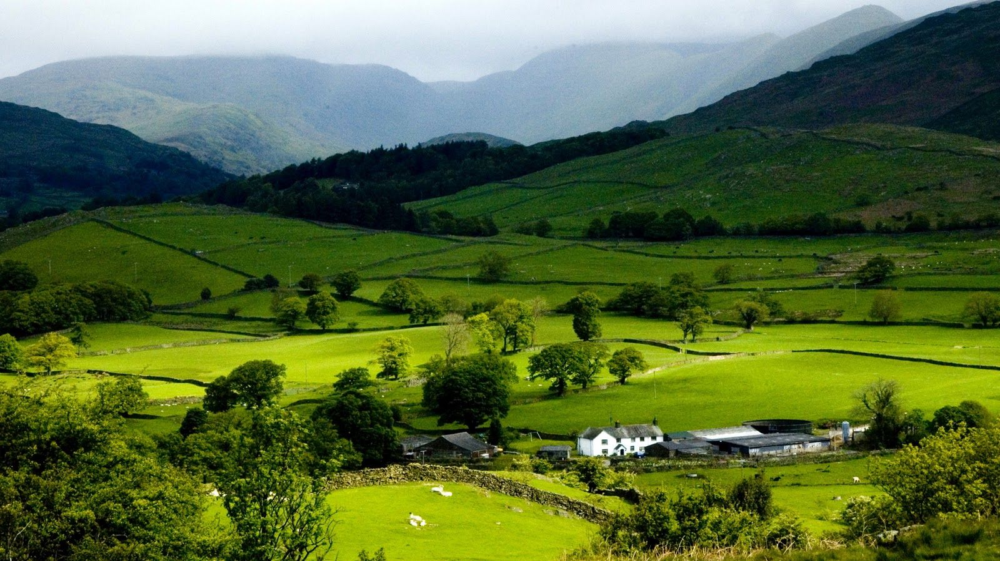

Idukki is a township in Idukki district near to the district headquarter Painavu in the state of Kerala, southern India. The township consists of the towns of Cheruthoni, Painavu, Thadiyampadu, Idukki proper and Vazhathope. Idukki town is an administrative town but the district headquarters is located at Painavu.